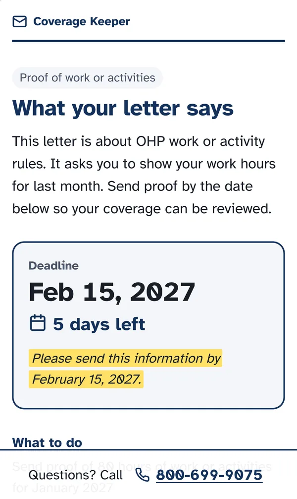
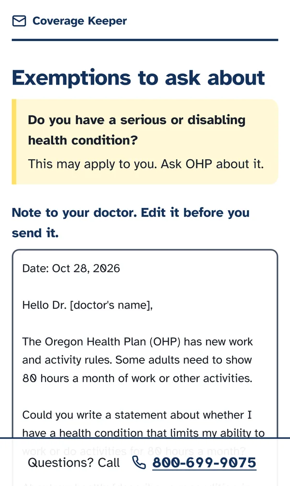

Coverage Keeper
Take a photo of a Medicaid renewal letter and Coverage Keeper tells you what the state wants, when it's due, and who to call. We built, tested, and deployed the first version in one day, then kept going: it now reads multi-page letters from 5 states, in English or Spanish.
- Result
- Prize winner, AI in Healthcare track. On the latest eval (24 held-out test letters, mean of 3 runs) it got every deadline right, named the sending state every time, and the eligibility guardrail never fired.
- What I did
- I built the doctor's note, rate-limited the paid model endpoint, fixed a prompt bug that marked readable letters as low confidence, and fixed flaky accessibility tests. After the hackathon I wrote the legal research for a public launch: federal law plus all 5 states, and 10 follow-up issues.
- Stack
- Next.js 16, React 19, TypeScript, Claude API, zod, Vitest, Playwright, axe-core, GitHub Actions, Vercel
The problem
When states restarted Medicaid renewals after the pandemic, most people who lost coverage lost it over paperwork. KFF counted 69% of disenrollments as procedural. Starting January 1, 2027, a 2025 federal law adds work, volunteering, or school requirements for most expansion adults, which means more letters and more deadlines to miss.
We designed for one user: a delivery driver with a prepaid Android phone who can't sit on hold during a shift.
What it does
- You photograph or upload the letter: up to 10 photos or one PDF. The browser shrinks photos before they upload.
- You get a plain-language summary, the deadline with days left (and the exact line it was read from), a checklist of documents, and a phone number.
- For Washington, Oregon, California, Nevada, and Arizona letters, you answer yes/no questions from that state's published exemption list and see which exemptions may apply, with a link to the state page.
- If you report a health condition, you can draft a note to your doctor, then copy or share it.
A call button stays on every screen. If the app can't read the letter, it says so and shows the number from the letter or OHP's line.


How it works
The model only reads. Claude (claude-opus-5-5) returns one fixed JSON shape: notice type, summary, deadline, the quoted deadline line, required action, documents, phone, and confidence. A zod schema validates it. A refusal, a 30-second timeout, or bad output all turn into an "unsure" result instead of a guess. Days-left math runs in Pacific time.
A model that makes up an eligibility answer could tell someone they're covered when they aren't. So the app never decides eligibility, and we enforced that three ways:
- The schema has no eligibility field, so the model has nowhere to put a verdict.
- Exemption screening never calls the model. Oregon's rules live in a JSON file, each with its source URL and the date we checked it.
- A guardrail runs on every output string and swaps anything like "you are eligible" for a safe fallback and the OHP number. A safety test suite with prompt-injection fixtures blocks the merge if it fails.
The server reads each photo in memory and then drops it. There's no database, no accounts, no analytics, and the logs never include letter content.
My part
- Legal research for launch. After the hackathon I researched which laws could apply before a public launch: federal law plus Washington, Oregon, California, Nevada, and Arizona, 14 topics each (unauthorized practice of law, health-data privacy, breach notice, AI rules, government affiliation, immigration advice, accessibility, and more). Every claim cites a primary source with the date we retrieved it, and anything we could not confirm is marked. I merged the actions into a launch checklist and a ranked list of questions for a lawyer, and filed 10 issues for product changes (#44 to #53), such as an AI label on every result and a guardrail against immigration advice. It is research for a lawyer to review, not legal advice.
- The doctor's note. A template draft that fills in from your screening answers, with copy and share buttons and a clear message if copying fails. I added it to both the safety suite and the Playwright end-to-end tests.
- Rate limiting. The letter-reading endpoint is public and every call costs money, so I added a per-IP limit of 10 requests a minute on
/api/read. Over the limit, it returns a 429 that still shows the OHP phone number, so nobody hits a dead end. Requests that declare a body over the size cap get a 413 before the server reads them. The counter lives in memory on each server instance and tracks at most 10,000 clients, so it stops one client looping but isn't a global limit. The platform firewall and the API spend limit do that job. I added unit tests for the limiter and an integration test on the route. - A prompt fix. Our first prompt marked readable letters as "low confidence" whenever they had no deadline. Many real notices have no deadline, so I rewrote that rule (prompt v2): a missing deadline no longer lowers confidence, but several possible deadlines still do. The test-set numbers stayed the same, so the fix removed a wrong warning without breaking anything.
- Accessibility tests. The axe checks were flaky because they ran before fade-in animations finished. I made them wait.
- Wording. I made the exemption questions say they use Oregon's rules.
How we tested it
We had no real letters, and we weren't going to use anyone's. CI rejects any eval file without a .gov source. At the hackathon the set was 13 images. It has since grown to 33 labeled letters: public sample notices from Oregon, Washington, California, Vermont, and Nevada, phone photos, full multi-page PDFs, and the agencies' own Spanish versions. 24 are held out for testing, including 4 Nevada letters that no prompt work saw.
| Test split, prompt v7, 24 letters (mean of 3 runs) | Result |
|---|---|
| Deadline correct (printed or none) | 24 of 24 |
| Sending state identified | 24 of 24 |
| Notice type correct | 22 of 24 |
| Required action correct | 22 of 24 |
| Eligibility guardrail hits | 0 |
The set is still small and mostly Vermont, because Oregon publishes only three sample notices and Arizona has published none. Document scores on full PDFs are lower (recall 0.76, precision 0.59). The phone photos show a screen, not paper. The README lists every failure by name.
Every pull request runs secret scanning, a dependency audit, a license check, lint and type checks, unit and safety tests, integration tests, a build, and Playwright tests with axe on an iPhone 15 and a Pixel 7 profile. Merges to main deploy to Vercel.
Next
Before a public launch: a lawyer's review of the legal research, the 10 product changes it called for (an AI label on every result, a line saying we aren't part of the state, a guardrail against immigration advice, and more), a fluent review of the Spanish, tests on phone photos of paper, and a pilot with a community health worker program.